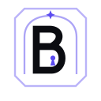
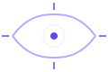
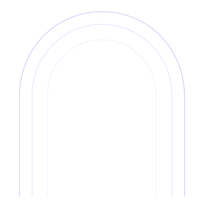
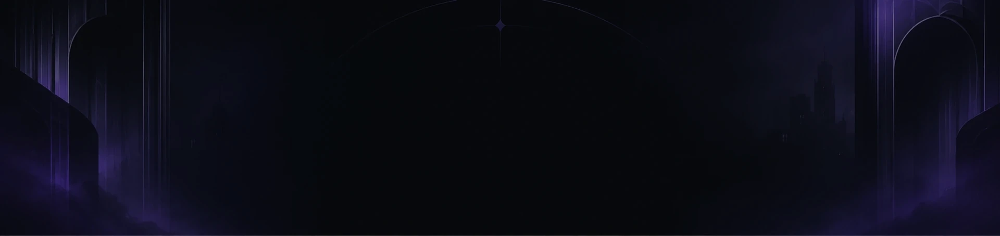

More signal.
Less spectacle.
Une identité pensée pour un tracker existant : noir froid, accent violet mesuré, chiffres lisibles et touches d'architecture occulte sans surcharge.
Signature


Dans la navigation actuelle
Palette du projet — inchangée
Background
#060709Surface
#111218Text
#F4F5F7Accent
#5B4BF0Accent text
#B4ABFFMuted
#A1A7B3Visuels de marque




Arrière-plan optionnel

Vos stats Deadlock,
lues en une seconde.
lues en une seconde.
Partage social
Assets originaux. Aucun fichier de police ou contenu propriétaire du jeu n'est distribué dans ce kit.